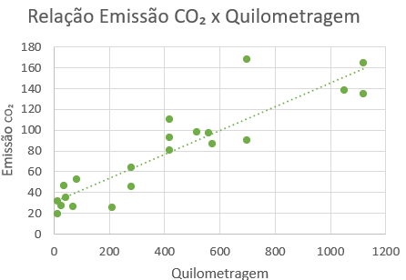
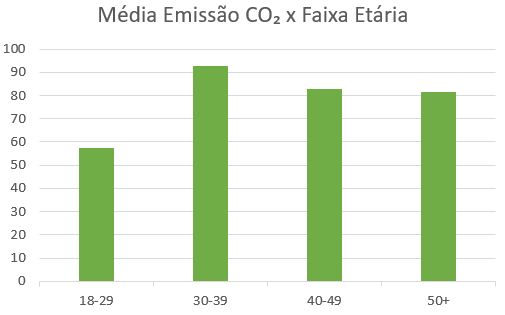

Entrevistamos pessoas de várias idades para medir seus hábitos e emissão de CO2.
| Idade | Modo preferido de locomoção | Km/dia | Transporte público por semana | Carne vermelha por semana | Média Kg CO₂ por semana |
|---|---|---|---|---|---|
| 39 | Carro | 160 | 0 | 5 | 245 |
| 45 | Carro e moto | 100 | 0 | 1 | 140 |
| 24 | Carro | 60 | 0 | 10 | 141 |
| 32 | Carro | - | 0 | 1 | Dados insuficientes |
| 34 | Carro | - | 0 | 1 | Dados insuficientes |
| 58 | Carro | 82 | 3 | 3 | 128 |
| 20 | Carro | 2 | 0 | 3 | 21 |
| 35 | Carro | 4 | 0 | 4 | 29 |
| 19 | Carro | 12 | 6 | 7 | 58 |
| 18 | Transporte Público | - | 5 | 4 | Dados insuficientes |
| 57 | Carro | 100 | 0 | 14 | 218 |
| 74 | Carro e transporte público | - | 7 | 7 | Dados insuficientes |
| 45 | Moto | 10 | 0 | 3 | 31 |
| 45 | Carro e moto | 150 | 0 | 2 | 214 |
| 44 | Carro | 160 | 0 | 0 | 215 |
| 45 | Carro e moto | 20 | 0 | 0 | 27 |
| 49 | Carro | 30 | 0 | 0 | 40 |
| 55 | Carro | 40 | 0 | 5 | 84 |
| 29 | Carro e transporte público | 40 | 5 | 2 | 66 |
| 50 | Carro | 6 | 0 | 5 | 38 |
| 35 | Carro | 60 | 0 | 7 | 123 |
| 30 | Moto | 60 | 0 | 5 | 111 |
| 39 | Carro | 74 | 0 | 6 | 135 |
| 21 | Uber | - | 0 | 7 | Dados insuficientes |
| 19 | Transporte Público | - | 5 | 4 | Dados insuficientes |
| 27 | Carro | - | 1 | 2 | Dados insuficientes |
| 24 | Transporte Público | - | 4 | 3 | Dados insuficientes |
| 20 | Transporte Público | - | 5 | 2 | Dados insuficientes |
| 19 | Transporte Público | - | 5 | 0 | Dados insuficientes |
| 20 | Carro | 2 | 0 | 5 | 33 |
| 46 | Carro e moto | 2 | 0 | 0 | 3 |
| 23 | Carro e transporte público | 5 | 5 | 7 | 49 |
| 26 | Carro e moto | 80 | 0 | 5 | 138 |
Para os cálculos de emissão de CO₂, assumiu-se 0,12 kg/km rodado de carro e 6 kg/refeição de carne vermalha. Alguns entrevistados não tinham noção de quilometragem rodada. Para estes, não foi calculada a média de emissão por falta de dados.


A maioria dos entrevistados utiliza o carro como principal meio de transporte, o que contribui significativamente para as emissões de CO₂, especialmente em deslocamentos longos e diários. Muitos dos entrevistados também relataram que o uso do carro é individual. Os dados analisados indicam que o transporte público é utilizado majoritariamente por pessoas mais jovens, especialmente na faixa etária entre 18 e 29 anos. Esse comportamento pode estar relacionado a fatores como menor poder aquisitivo, falta de acesso a veículos próprios e maior dependência de rotinas como estudos e primeiros empregos, geralmente concentrados em áreas urbanas.
Duas reflexões podem ser destacadas a partir desse padrão:
Para ampliar o uso do transporte público entre diferentes grupos etários, é essencial investir em infraestrutura, pontualidade, cobertura geográfica e tecnologias que facilitem o uso, como aplicativos de rotas e pagamento digital.
Muitos participantes relataram o consumo frequente de carne vermelha durante a semana, o que pode ter um impacto significativo na pegada de carbono individual. A produção de carne bovina, por exemplo, é uma das maiores responsáveis pela emissão de gases de efeito estufa, com cerca de 60 kg de CO2 emitidos para cada quilo de carne produzida. Comparado a outros tipos de carne, esse número é bem mais alto.
Aqui estão duas reflexões sobre o consumo de carne vermelha e suas alternativas:
Além de optar por fontes de proteína com menor impacto ambiental, pequenas mudanças, como reduzir o consumo de carne vermelha para algumas vezes por semana ou explorar alternativas vegetais, podem contribuir bastante para a diminuição da pegada de carbono individual. Essas escolhas não só ajudam o meio ambiente, mas também podem trazer benefícios à saúde.